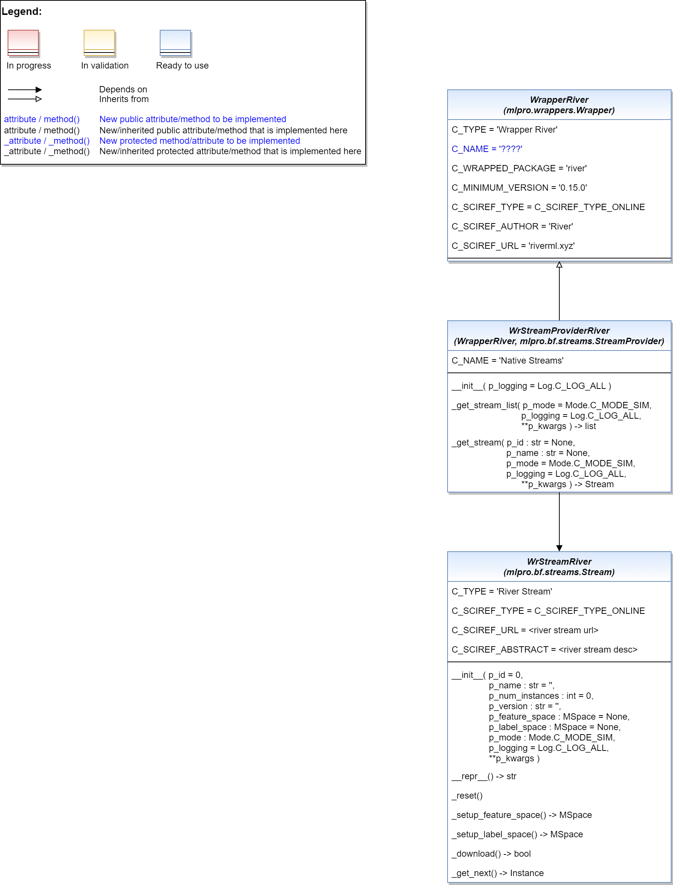

Wrappers for River Data Streams
{kind=link}
Ver. 2.0.0 (2023-04-16)
This module provides wrapper classes to embed River stream functionalities into MLPro.
Learn more: https://www.riverml.xyz/
- class mlpro_int_river.wrappers.streams.WrStreamProviderRiver(p_logging=True)
Bases:
WrapperRiver,StreamProviderWrapper class for River as StreamProvider. The wrapper provides all River data sets as streams. The full list of data sets provided by River can be found here:
https://github.com/online-ml/river/blob/main/river/datasets/__init__.py
- Parameters:
p_logging – Log level of stream objects (see constants of class Log). Default: Log.C_LOG_ALL.
- C_NAME = 'Native Streams'
- _get_stream_list(p_mode=0, p_logging=True, **p_kwargs) list
Custom class to get alist of stream objects from River.
- Parameters:
p_mode – Operation mode. Default: Mode.C_MODE_SIM.
p_logging – Log level of stream objects (see constants of class Log). Default: Log.C_LOG_ALL.
p_kwargs (dict) – Further stream specific parameters.
- Returns:
stream_list – List of provided streams.
- Return type:
list
- _get_stream(p_id: str = None, p_name: str = None, p_mode=0, p_logging=True, **p_kwargs) Stream
Custom class to fetch an River stream object.
- Parameters:
p_id (str) – Optional Id of the requested stream. Default = None.
p_name (str) – Optional name of the requested stream. Default = None.
p_mode – Operation mode. Default: Mode.C_MODE_SIM.
p_logging – Log level (see constants of class Log). Default: Log.C_LOG_ALL.
p_kwargs (dict) – Further stream specific parameters.
- Returns:
s – Stream object or None in case of an error.
- Return type:
Stream
- class mlpro_int_river.wrappers.streams.WrStreamRiver(p_id=0, p_name: str = '', p_num_instances: int = 0, p_version: str = '', p_feature_space: MSpace = None, p_label_space: MSpace = None, p_mode=0, p_logging=True, **p_kwargs)
Bases:
StreamWrapper class for Streams from River.
- Parameters:
p_id – Optional id of the stream. Default = 0.
p_name (str) – Optional name of the stream. Default = ‘’.
p_num_instances (int) – Optional number of instances in the stream. Default = 0.
p_version (str) – Optional version of the stream. Default = ‘’.
p_feature_space (MSpace) – Optional feature space. Default = None.
p_label_space (MSpace) – Optional label space. Default = None.
p_mode – Operation mode. Default: Mode.C_MODE_SIM.
p_logging – Log level (see constants of class Log). Default: Log.C_LOG_ALL.
p_kwargs (dict) – Further stream specific parameters.
- C_TYPE = 'River stream'
- C_SCIREF_TYPE = 'Online'
- _reset()
Custom reset method to download and reset an River stream
- _setup_feature_space() MSpace
Custom method to set up the feature space of the stream. It is called by method get_feature_space().
- Returns:
feature_space – Feature space of the stream.
- Return type:
MSpace
- _setup_label_space() MSpace
Custom method to set up the label space of the stream. It is called by method get_label_space().
- Returns:
label_space – Label space of the stream.
- Return type:
MSpace
- _download()
Custom method to download the corresponding River dataset
- Returns:
loaded – True for the download status of the stream
- Return type:
bool
- _get_next() Instance
Custom method to get the next instance of the River stream.
- Returns:
instance – Next instance in the River stream object (None after the last instance in the dataset).
- Return type:
Instance